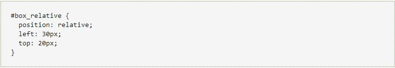
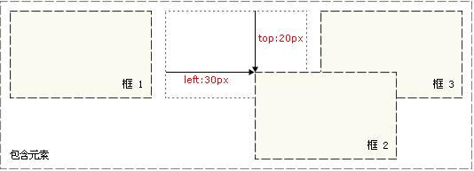

Welcome to
Learn HTML/CSS
CSS Positioning
The CSS Positioning attribute allows you to locate the element.
CSS positioning and floating
CSS provides some attributes for positioning and floating. By using these attributes, we can establish column layout, overlap part of the layout with another part, and also accomplish many tasks that need to be done by many forms.
The basic idea of location is very simple. It allows you to define the location of the element box relative to its normal location, or the location relative to the parent element, another element or even the browser window itself. This function is very powerful.
The first proposed floating in CSS1 is based on a function that Netscape increases in the early stages of Web development. The floating is not exactly the location, but, of course, it is not a normal flow layout.
CSS positioning mechanism
CSS has three basic positioning mechanisms: ordinary flow, floating, and absolute positioning.
CSS relative positioning:
If a relative position is placed on an element, it will appear in its location. Then, you can move the element "relative to" its starting point by setting a vertical or horizontal position.
If top is set to 20px, the frame will be 20 pixels below the top of the original position. If the left is set to 30 pixels, a 30 pixel space is created on the left of the element, that is, to move the element to the right.


Notice:In the use of relative positioning, whether or not to move, the element still occupies the original space. Therefore, the mobile element causes it to cover the other frames.
The basic idea of location is very simple. It allows you to define the location of the element box relative to its normal location, or the location relative to the parent element, another element or even the browser window itself. This function is very powerful.
All frames are located in ordinary flow except specially designated. That is to say, the position of the element in the ordinary stream is determined by the position of the element in (X) HTML.
The block - level frame is arranged from top to next, and the vertical distance between the frames is calculated by the vertical outer margin of the frame.
The inner frame is arranged horizontally in one line. You can use horizontal margins, borders, and outer margins to adjust their spacing. However, the vertical inner margin, the border, and the outer margin do not affect the height of the inner frame. A horizontal frame formed by a row is called Line Box, and the height of the frame is always enough to hold all the inner frames it contains. However, the height of the set can increase the height of the box.
CSS position attribute
By using the position attributes, we can choose 4 different types of location, which affects the way the element box is generated.
The meaning of the position attribute value:
static
The element frame is normally generated. A block - level element generates a rectangular box, which serves as part of the document flow, and the inside element creates one or more row boxes, placed in the parent element.
relative
The element frame shift a certain distance. The element remains in its unpositioned shape, and its original space remains.
absolute
The element box is completely deleted from the document flow and is located relative to its block. The inclusion block may be another element in the document or the initial inclusion block. The space that the element originally occupied in the normal document flow would be closed as if the element did not exist. A block - level box is generated after the element is positioned, regardless of the type of frame that it generates in the normal flow.
fixed
The representation of an element box is similar to setting the position to absolute, but the block is the window itself.
Note: the relative location is actually seen as part of the normal flow location model, because the location of the element is relative to its position in the ordinary flow.